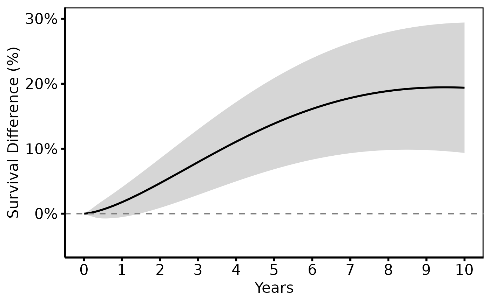

Prepare survival difference (life-gained) data for plotting
Source:R/hazard-plot.R
hv_survival_difference.RdStores pre-computed survival difference data as an
hv_survival_difference object. Pass the result to
plot.hv_survival_difference() to render the plot. Covers
tp.hp.dead.life-gained.sas and the survival-difference component of
tp.hp.numtreat.survdiff.matched.sas.
Usage
hv_survival_difference(
diff_data,
x_col = "time",
estimate_col = "difference",
lower_col = NULL,
upper_col = NULL,
group_col = NULL
)Arguments
- diff_data
Data frame of pre-computed survival differences. See
sample_survival_difference_data().- x_col
Name of the time column. Default
"time".- estimate_col
Name of the difference column. Default
"difference".- lower_col
Lower CI column, or
NULL. DefaultNULL.- upper_col
Upper CI column, or
NULL. DefaultNULL.- group_col
Grouping column for multiple comparisons, or
NULL. DefaultNULL.
Examples
library(ggplot2)
diff_dat <- sample_survival_difference_data(
groups = c("Control" = 1.0, "Treatment" = 0.70)
)
sd <- hv_survival_difference(diff_dat,
lower_col = "diff_lower", upper_col = "diff_upper"
)
plot(sd) +
geom_hline(yintercept = 0, linetype = "dashed", colour = "grey50") +
scale_x_continuous(limits = c(0, 10), breaks = 0:10) +
scale_y_continuous(limits = c(-5, 30),
labels = function(x) paste0(x, "%")) +
labs(x = "Years", y = "Survival Difference (%)") +
theme_hv_poster()
